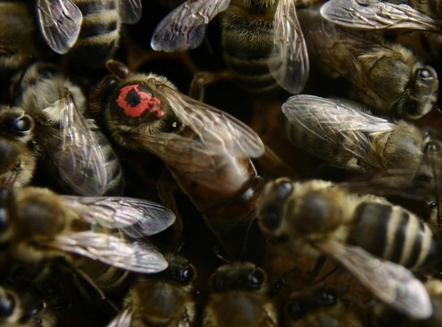
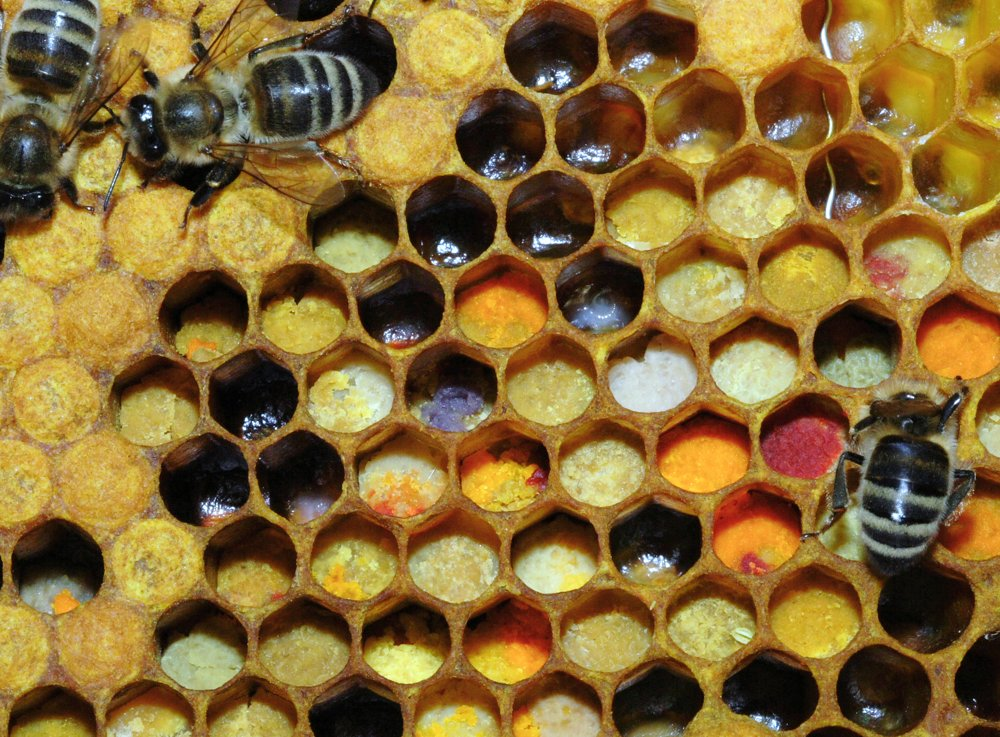
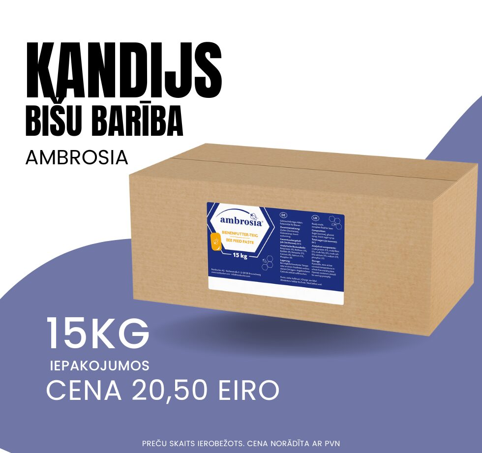
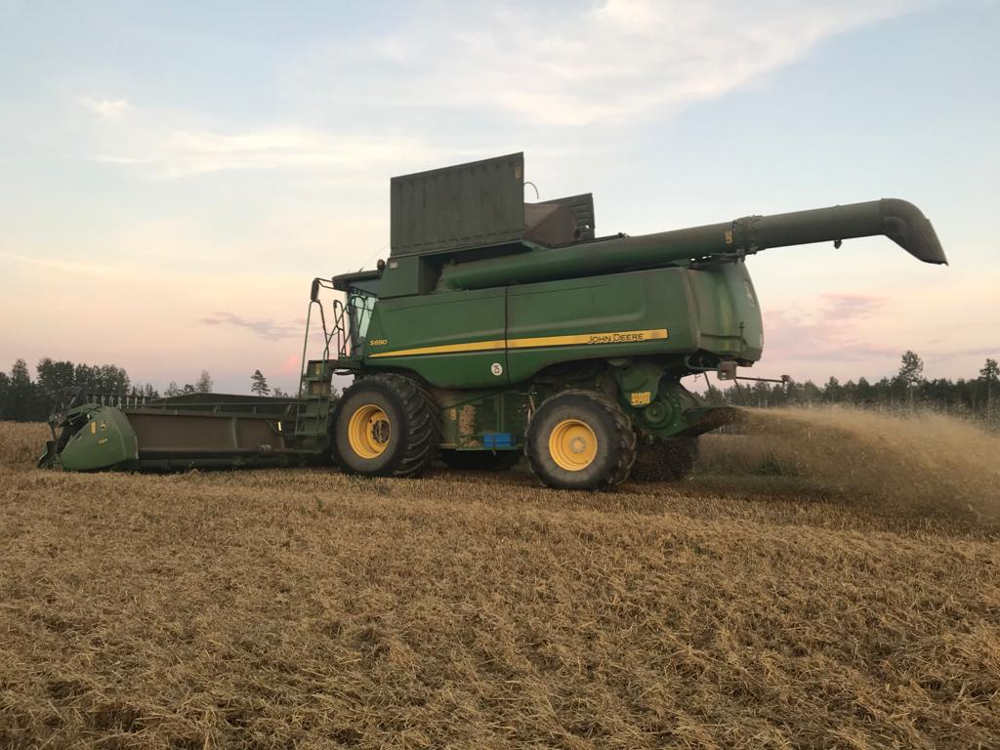
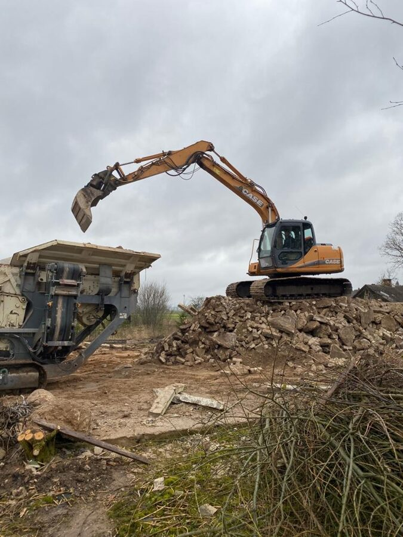
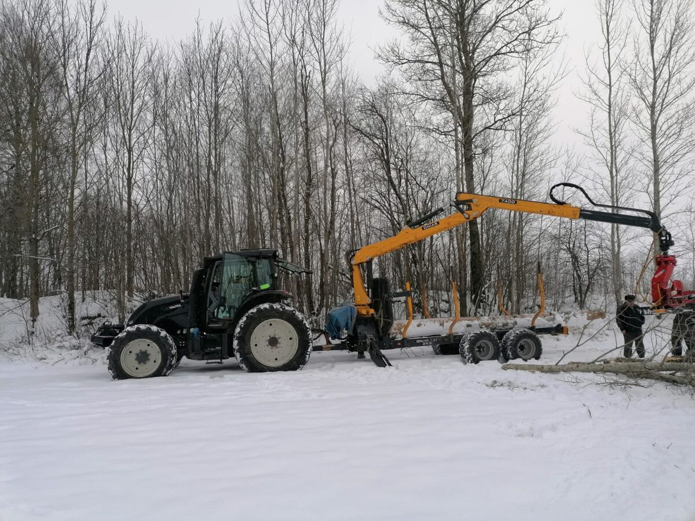

14 €/kg
Vaska šūnu iegāde
Gatavas vaska šūnas, 410×260 mm, šūnas izmērs 5,4 mm. Iepakojumā 5 kg (~63 gab.).
Pakalpojumi biškopjiem
Bišu mātes, vaska šūnas, bišu maizes pārstrāde un Ambrosia bišu barība biškopjiem. Lauksaimniecības, meža un ekskavatora tehnikas pakalpojumi lauksaimniekiem Zemgalē un apkārtnē.

Apaugļotas un neapaugļotas bišu mātes no pārbaudītām, produktīvām saimēm.

Pieņemam bišu maizi (bez medus, izgrieztu no rāmjiem) katru darba dienu. Apstrāde aizņem līdz 2 nedēļām.

Ambrosia bišu barības kandijs: gatava cukura pasta. 12,5 kg (5×2,5 kg) un 15 kg iepakojumos.
Gatavas vaska šūnas, 410×260 mm, šūnas izmērs 5,4 mm. Iepakojumā 5 kg (~63 gab.).
Atkarībā no atvestā vaska kvalitātes. Cena bez PVN.
Atved savu vasku, saņem gatavas šūnas. Precīzu attiecību un piemaksu noskaidro pa tālruni.
No jūsu vaska, + PVN. Bioloģiskajam vaskam 1,35 € + PVN/kg. Zem 50 kg jāpiemaksā 10 € sterilizēšanai.
Piegādājot vasku, nepieciešams sertifikāts un marķēts iepakojums. Vasku pieņemam katru darba dienu no 8 līdz 17.
Esam vienīgie Ambrosia izplatītāji Baltijā: sīrups, pasta un kandijs.
BIŠU BARĪBA · DAŽĀDI IEPAKOJUMI
Rokām liets bišu vaska sveces ar dabīgu medus aromātu, pieejamas pēc pieprasījuma.

Augsnes apstrāde, graudaugu, rapšu, pupu un zirņu sēja, minerālmēslu miglošana, kulšana (CLASS Tucano 470, John Deere S690) un pārvadājumi līdz 25 t.

Kāpurķēžu ekskavators un buldozers, arī Kubota KX080-4 (8 t, ar kniebējgalvu). Auces, Saldus un Dobeles apvidū.

Kokmateriālu izvešana ar meža vedēja piekabi (12 t) un kniebējgalvas pakalpojumi (koka diametrs līdz 22 cm). Auces, Saldus un Dobeles apvidū.